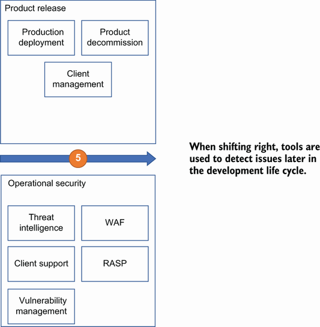

Part 1. Defining application security
1 Why we need application security
10h 2m remaining
1 Why we need application security
The current state of application security
Breaches caused by insecure applications
Every company uses software to function. Whether it is a Fortune 500 technology company or a sole-proprietor landscaping company, software is integral to businesses large and small. Software provides a means to track employees, customers, inventory, and scheduling. Data moves through a myriad of systems, networks, and software, providing insights to businesses looking to stay competitive. Some of that software is built within the organization or purchased and integrated. It enables organizations to move quickly and stay ahead of their competition. In the United States, software in various industries, including finance, sales, human resources, and supply chains, has seen a steady increase, and the trend is continuing. Over the next decade, software in these industries will see a steady increase in market size. For instance, in 2020, the market size of global business software and service was nearly $390 billion and is expected to have an annual growth of 11% from 2021 to 2028. This expansion is based on the increasing need for automation and processing solutions in nearly every sector of the economy.
The shift to software-driven organizations can be seen in several prominent examples. Movies were rented at a physical store before 2007, when Netflix began streaming them directly to your television. Books were purchased in a shop before Amazon upended not just the book-buying experience but the overall retail market for any item you can think of. It used to take a phone call to order food; now a mobile app allows you to not only order your food but also track it from the restaurant to your front door. Moreover, software is used in all parts of the supply chain by every organization. Leaders in these organizations can get real-time updates on product as it moves around the world and to their customers’ hands. Software is no longer something organizations find nice to have; it is now critical to any organization’s ability to compete.
In short, software is eating the world.
Each new piece of software brings new capabilities but also new challenges, especially when that software is available over a network where it is open to a wide audience. More capabilities mean more software. More software means more data. This data is intended to assist an organization and its customers to gain insight into the services the organization offers.
However, the additional software and data gives more opportunities to bad actors to exploit weaknesses. Data is a lucrative target for attackers and difficult for organizations to protect, especially when the organization collects a large amount of it. By the beginning of 2020, the amount of data created worldwide had reached 44 zettabytes and is expected to reach 463 exabytes per day by 2025 (https://techjury.net/blog/how-much-data-is-created-every-day).
DEFINITION 1 exabyte is 1018 bytes and 1 zettabyte is 1,000 exabytes or a trillion gigabytes.
The increasing amount of software available and the volume of data, which every second offers a target-rich environment for malicious actors looking for a way in and access to the data. There is constant background noise of malicious activity that pervades the internet. The moment that any software becomes available online, it is immediately probed and prodded. Some of that activity is from automated tools that will then trigger an alert when it finds software that can be compromised. Some of it is from bad actors waiting for the latest gap in security so they can hunt the internet for applications that are vulnerable to it and create exploitation software. Other activity comes from well-financed bad actors who are simply looking for any weaknesses so that they can gain a foothold in an organization in order to come back later for exploitation. If ever there was a more fitting metaphor for software on the internet, it would be the Wild West of the early United States, when lawlessness was rampant, and sheriffs were often overwhelmed and outgunned by the bad guys.
Software, data, attackers, oh my! When organizations don’t take software security seriously, they run the risk of jeopardizing not only their client’s data, but also the organization’s future. Most organizations that are not in the software-building industry will often say that they are not a prime target, or that their data is not interesting to an attacker. They would be wrong. Almost all data that is collected and processed by an organization can be used and misused by an attacker. Nothing is too unimportant. And although many large organizations can weather a data breach, smaller companies often cannot while remaining in business.
It is often said that data is the new oil. Mining, processing, and selling data is a lucrative business both for the organizations that do so openly and the malicious actors who are looking for ways to profit from an organization’s missteps. Building security into the software from the start is the first, and most important, step for organizations to protect their software, their data, and their livelihood.
Application security is the implementation of security through practices, tools, technology, people, and processes in the development life cycle. The rest of this book will cover how application security is used throughout the development life cycle to ensure that an organization has reduced the risk posed to its software and has done so in a way that does not impede an organization’s ability to deliver that software in a timely manner. It is important to know that there is never a silver bullet to solving security issues. No one tool, process, or person can guarantee an application's security, as attacks are constantly evolving and technology keeps moving. However, ensuring that you have a robust approach to application security, which includes not just the fundamentals of an application security program but also the ability to adapt and evolve on an ongoing basis, is what sets apart a good program from a bad one. This is what we will discover in this book.
Products start out as an idea that is developed by a client or an organization's leadership team. Evolving that idea from concept, to paper, to minimum viable product, to a production application that is brought to life takes a team of people from multiple disciplines. Most will think first about all the developers, testers, and product people that go into making a successful product, but what about those that make the product secure? The goal is to make a product that does what the customer wants and that is free from defects and security flaws that would otherwise devalue the product and the organization as a whole.
The software development life cycle (SDLC) is defined differently in every organization, but in general, every organization has a similar path from concept to production. Figure 1.1 depicts a standard SDLC, where
The client or product owner envisions a new feature or enhancement.
Use cases and requirements are developed. The team determines where to assign the work for an upcoming release.
The development team then makes decisions on how the requirements will be implemented through technology choices. Development begins, and the code is integrated into a code branch.
The feature is then moved to a preproduction environment like a test or staging environment where tests can be performed. The product owner will review the results of the test and, if satisfied, agree to have it released to production for the clients to use.
The feature is released to clients, and the organization manages the feature as a piece of a larger application through client and technical support. Eventually, the feature is decommissioned in favor of a new release.

In the first step, the product may already exist, in which case the client would request an enhancement or a new feature. For instance, perhaps there’s a new method of accessing reports within the application, or a new dataset becomes available in the user interface. Otherwise, the product owner may be collecting information from several clients and put in an enhancement request for a new feature. In either of these cases, an organization will gather the client needs in the form of use cases. A simple use case could be written as the following:
“As an administrator, I want to be able to create weekly reports that show the application usage by users in my organization.”
This is a simple use case for an application that is based on SaaS (software as a service) and is used by many organizations to provide some service. The details are not important in this case, as every organization is different, regardless of the industry it is in. In most cases, a feature would be developed through multiple use cases.
Once the client or product owner has the use case defined, this is then reviewed with the development leaders of the product. The architects, lead developers, and operational members of the development team review the use cases and determine the feasibility of the request.
This brings the use case to the next step in the process, where the functional and nonfunctional requirements are defined. Each use case can have numerous requirements. Following is a functional and nonfunctional example of requirements for the previous use case:
Functional—Application shall provide the ability to create a report of application usage by users.
Nonfunctional—Report creation shall be available to only administrators.
This is not a book on writing requirements, but a simple explanation is that functional requirements describe what the feature should do, and nonfunctional requirements describe how the feature should do it. Most information on requirements describe security as a nonfunctional requirement. However, it is not uncommon to find security features being described as functional requirements, especially when it comes to things like encryption, authentication, and access.
The product owner will take the defined requirements and decide with the development team what priorities might need to shift and what the delivery dates are for the new feature. There is something missing so far. Where are the people, tools, and processes that bring security into a product? As mentioned, security is typically a nonfunctional requirement. However, those nonfunctional requirements should not be left up to the product owner and the development team to determine on their own. A mature organization brings in the application security team not just to review the use case and requirements but also, define security requirements that should be in place as part of the feature development. If the product team defines their requirements and begins coding before engaging the application security team, they run the risk of creating security issues that are more difficult to resolve once the feature is nearing completion or ready for release. For instance, a development team may know that they need to provide authorization and may decide to develop an internal solution to manage the authorization without looking at a more fitting solution that is used across the organization and is more industry aligned, like OAuth.
Fitting security in during the initial phases is done by taking industry and organizations standards and best practices and building them in to the process of creating requirements. For instance, using industry guidance on encryption would lead to setting requirements on key management and encryption strength. Or the organization may have standards that require the development to adhere to certain architecture or regulatory requirements like using a specific analysis tool. Additionally, when building these requirements, the team will take inputs from items like threat models and risk assessments to further develop requirements that align to the business requirements so that security can be built into the process as early as possible. We will discuss threat models and risk assessments more in depth in future chapters.
As mentioned, application security is the implementation of security into an organization’s development life cycle. The reality is that application security teams, if they exist in an organization at all, are often external to the engineering teams they work with. They can be found under an enterprise-wide function like the enterprise architecture organization, or under a broader security organization. The last one is the most typical. These application security teams will bring in tools, processes, and people to identify software vulnerabilities that are then backlogged for remediation. These vulnerabilities are found through several opportunities, including the following:
Through the tools that are provided to engineering by the application security team.
Through internal or external penetration tests completed by the application security team or an external vendor, respectively.
Through identified issues from clients, or other external sources like a bug bounty program, or vulnerability disclosure policy. More on these in later chapters.
If the application security team and the organization are considered mature, these vulnerabilities, when found, will block builds. Most organizations that take this approach will set a threshold or vulnerability type that will trigger a block. For example, a vulnerability with a high or critical rating could block a build. You can see how this can cause issues between the engineering team that is working toward a release of code and is suddenly stopped by tools and processes that have been put in place by an external team. Blocking a build is by far the most preferred method for an application security team that wants to ensure a secure product, but this can become an instant point of contention. In less mature organizations, a process is in place to allow the engineering team to continue with their build and deployment by having the found vulnerability backlogged for future resolution.
The application security team is in regular competition with feature release. Every new release brings new features. New features bring new defects. New defects bring new security vulnerabilities. As mentioned previously, in some cases these vulnerabilities can break a build and block the release of a feature. However, most organizations will prioritize their feature release over a nebulous vulnerability. I will discuss this more later, but many scanning tools are noisy and produce results that are not easily consumed by developers. Furthermore, not all application security teams are great at translating results from tools and other tests into something that is understandable by engineering without having a meeting or work session to understand. This obviously doesn’t scale well in large organizations.
The security issues are backlogged with an I-owe-you to address the issue in the future. But every new release brings the potential for more vulnerabilities to the growing backlog and the cycle continues. Most organizations will take a systematic approach to reducing vulnerabilities, such as focusing on only the high and critical ones or ones of a certain type, like SQL injection or cross-site scripting. Other organizations may focus on the riskiest vulnerabilities based on product capability and exposure, like a financial organization processing sensitive account information. Some organizations may even have a “security release,” where their focus is on resolving a large number of security issues in a single release. These different methods help reduce vulnerabilities in burst but don’t address the overall issue.
Like Jacob Marley from Charles Dickens’s A Christmas Carol, these vulnerabilities become chains that weigh down the development team and will eventually haunt an organization. The continued accumulation of vulnerabilities adds to what is called security debt, where an organization continues to add new vulnerabilities to the old ones that were already existing. This security debt increases the risk level of the product being developed and the organization that is selling it. Eventually one, or several, of those vulnerabilities will lead to an exploitation of the application by a bad actor. This is similar to the concept of technical debt that builds when an organization takes a quick and easy path to getting features to their customers instead of choosing more sustainable design choices.
Further complicating the job of the application security team is the fact that they are often brought in too late in the development process. Usually, it is once the feature or product has gone through several design and architectural decisions. The code development may have already been well underway, or worse, nearly complete by the time the application security team gets involved. This means that many “one-way” decisions may have already been made, and it is up to the application security team to provide some blessing of the design and code or identify mitigations for discovered threats. This is not the case everywhere, but in a sufficiently large organization, this will happen. If the application security team has had the opportunity to provide guidance, requirements, and security tooling early in the process, potential vulnerabilities can be reduced. Unfortunately, the cases where the application security team is involved early are few and far between, despite it being effective. This leaves the application security team hampered with the decision to be “that person” by blocking a release in order to impose security requirements before production or face consequences from the broader organization for allowing code to be released with known weaknesses. Such is the current picture of application security where there exists a constant struggle between enabling the business and reducing the organization’s overall risk.
There comes a point where we need to stop just pulling people out of the river. We need to go upstream and find out why they’re falling in.
The application security team has at its disposal the most state-of-the-art tools that include technologies like machine learning, artificial intelligence, natural language processing, and automation. However, some of these tools detect issues once the code is written, and most likely checked in and on its way to a production environment near you. I will talk more about the various tools in future chapters, but as mentioned, there are several tools that are commonly found in a modern development pipeline related to security. Static application security testing (SAST) can scan written software looking for commonly found security issues like hardcoded passwords and SQL injection. Dynamic application security testing (DAST) will attempt to perform real-time security testing on a web application while it is running in an environment. Software composition analysis (SCA) tools will look for known security vulnerabilities and license concerns with third-party and open source software that is used to build the overall application. Additionally, there are cloud architecture, container, infrastructure template, and mobile security tools that can produce scan results that will identify vulnerabilities or other weaknesses in the code or deployment of the software.
Definition OWASP (Open Web Application Security Project) is an open source community of application security professionals who develop standards, tools, and projects to assist organizations with the development of security in their applications.
Take a look at OWASP’s page on source code analysis tools and review some of the available tools. There are several that are “open source or free.” One of these open source tools is the APIsecurity.io security audit (https://apisecurity.io/tools/audit/). You can use this tool to upload an OpenAPI JSON file to detect possible vulnerabilities. If you do not have your own OpenAPI JSON file to use, you can search for one online, or use a sample like this:
Look at the results that you get back from APIsecurity.io, and determine whether the issues are true positives or not. Begin to think about how to mitigate the issues that are found.
When a vulnerability is detected, the tools can open a ticket to the application security team and the engineering team, so long as the integration between security tool and the defect tracking tool is set up. The issue is then triaged with the application security and engineering teams, prioritized, and worked to closure.
Although the aforementioned tools are detection tools, there are protection tools as well that will sit in front of a running application and attempt to block activity that looks malicious. Web application firewalls (WAF) provide protection against attackers looking to take advantage of weaknesses in a running web application. Run-time application security protection (RASP) will provide similar function as the WAF with the exception that RASP generally runs alongside, or even inside, the application. Both mitigation software and denial of service protection will attempt to stop volumetric attacks that send large quantities of malicious traffic that attempt to bring down the application or perform repeated tasks like brute-force activity. Secure gateways will provide similar protection by blocking unauthorized access and activity as well as provide real-time monitoring.
Again, these protection tools use all the latest and greatest techniques to attempt to provide protection like machine learning and artificial intelligence. Some of these tools are great at blocking unwanted activity by malicious actors but at the same time, some tools run the risk of blocking an organization’s clients from using the software as it was intended if the tool is not properly tuned. A common example of this is when a batch job runs and calls an API or function hundreds or thousands of times in a short period of time. This could look like automated malicious activity to the protection tools and could block the legitimate traffic. To separate the two, the application security team and the engineering organization have to work together to pattern behavior into rulesets that block malicious traffic and allow the good traffic. This can come in the form of allowlists for certain URLs and IPs. There is a steep hill to climb to enable protection tools since many organizations, understandably, will be concerned with performance and possible interruptions of legitimate traffic.
Like a comfortable blanket, security tools that are layered in during the development process and pipeline can become reassuring to an organization. However, as with most tools, the effectiveness is determined by how well the tool integrates with the organization and how well it protects or provides legitimate results. Organizations that enable one or many of these tools simply to say they use them, or (*cringe*) say that they block the OWASP Top Ten, are not doing themselves or the organization any favors. Sure, during an audit the organization can say that they are using tool X or Y during their development life cycle. Regardless of whether the auditor’s pencil gets to work checking a box, the organization may or may not actually be more secure.
The reality is that these tools can create a lot of noise for both the engineering team and the application security team. The scanning tools churn out findings that need to be triaged, rated, and assigned. Many are false positives. The blocking tools create false alarms and raise concerns about the impacts on legitimate activity. And many times, there is an overreliance on the security tools to provide protection, especially when there is a vulnerability that is long in the tooth with no plan to remediate. For instance, an organization may rely heavily on a WAF to provide protection for an SQL injection vulnerability found in an application that has been designated as a “sunset” with a multiyear decommission. We’ll talk more about that as we get into vulnerability management.
Like any other tool, the security tools that are used in an organization can be expensive and misconfigured. Further, those tools that are not finely tuned will generate an abundance of false positives—like the ones that are turned on and walked away from. This not only creates additional work on the application security and engineering teams, but also reduces the confidence level in those tools and, by extension, the application security team. When false positives become normal, they become an easy escape route for engineering teams looking to find a way to say that their application is not riddled with vulnerabilities. If the last ten SQL injection issues flagged by a tool were false positive, why would this new one not be? Which brings the application security and engineering teams to a standoff on proving a finding to be a true vulnerability or a false positive. This can be extremely challenging for the application security team, which typically does not have the extensive context that the engineering team has of their own application. It is also a time-consuming process to bring together the appropriate subject matter experts (SME) to pore over the details of the code in relation to the finding.
With the varying tools and the number of findings from each of them, mature application security teams focus on sifting the signal from the noise and providing quality results to the engineering teams. This raises the confidence level of the findings and establishes a more robust relationship between security and engineering.
The application security team will work closely with the engineering team and attempt to have as much application context as possible so as to take the burden of proof out of the engineering team’s hands. In other words, the application security team’s goal is to ensure the following:
Results are true positives that have already been triaged by the application security team.
The steps to remediate the vulnerability are clearly understood by the engineering team. If possible or applicable, the application security team should provide code samples that show exploitation and resolution.
There are clear expectations on timeline to resolution based on the criticality of the vulnerability.
We will dive into this more in future chapters, but for now let’s look at how security can be integrated into the development life cycle.
Whereas every organization releases software in their own manner, for most organizations the path from idea to production is relatively the same. Figure 1.2 shows the common pattern to release.
The phrase shift left is the concept of moving security as close to the beginning of the software development life cycle as possible. In figure 1.2, that means during the initial stages of gathering and building requirements as well as in the development phase. The term has been used frequently in the application security space as a way to describe building practices and tools that can uncover security issues as soon as possible in the development life cycle. Many of them I’ve mentioned previously. Sticklers will tell you that the best way to accomplish this is to ensure that security is there when the developer’s hands are on the keyboard creating that new function. Those sticklers would be right. The time to correct a security vulnerability is when it is being created.

Figure 1.2 Example of a development pipeline for code deployment
Shifting left is less visible than shifting right. In the shift right model, tools are placed strategically throughout the development life cycle and production environment to ensure that vulnerabilities are identified and protected against. Penetration tests are executed to identify issues. You can verify that the tools are working, and you can generate reports that show you the effectiveness, or the ineffectiveness, of the tools that you implemented. This relies on a detect and respond paradigm that is very reactive and adds to the backlog of vulnerabilities that I talked about earlier where the critical and high ones are usually prioritized while others go to the backlog. This can also disrupt the DevOps model that looks to move quickly with changes and doesn’t handle broken builds or gates very well.
Getting to the goal of developers creating more secure code usually means using controls like
Top-level security policies that are used to develop security procedures, processes, and standards
Tools that are integrated into the development environments and pipeline that offer faster feedback
Building reusable secure architecture
However, some of these can be circumvented. Like most training, security education can quickly be forgotten or pushed aside for the sake of speed of delivery of new features. Developers also change roles, jobs, and functions and are often overburdened with deadlines, tickets, requests, fires, and meetings, which favors moving fast as opposed to secure. This leaves even the most well-meaning, security-conscious developer to push security further down in priority, especially when there is a reliance on the protection tools, as described previously, that will detect and alert on security issues. Security quickly becomes someone else’s problem. Additionally, the tools become a business blocker, which opens the opportunity for the product owner to request exceptions when a feature release is at risk due to a found security issue. Architecture is frequently misused or not well socialized across the organization, meaning that not all development teams are aware of frequently changing architectural patterns that offer more security.
When an organization decides that their security posture will be mostly a shift-right one, they integrate tools into the development life cycle that will detect issues and open tickets to the security or development team (figure 1.3). Most of these tools are used to find issues in production, or late in the development process. These organizations will enable a few protection mechanisms like a WAF and primarily play defense by tracking the incoming vulnerabilities, triaging, and prioritizing them, and assigning them to teams to be resolved.

Figure 1.3 Security tools that are used in a shift-right approach
It is well known that resolving defects, in this case security vulnerabilities, costs more in terms of money and time than an issue that is resolved early in the life cycle. The effort and disruption that is required to resolve a defect that is already in a production environment can be multiple tens of times more expensive than resolving it at the requirements phase with each progressive phase of development becoming more expensive. There are also service-level agreements that could be at risk when a vulnerability gets resolved in production if an outage is incurred through resolving the vulnerability. This further exposes the organization to additional costs above and beyond the engineering cost of resolution. Security vulnerabilities have the added impact of potentially leading to a reportable event or even reputational damage should the vulnerability lead to a large-scale breach that exposes client data or takes an application offline.
However, shifting right does allow the development team to produce features at a rapid pace since security is largely a defensive position when the software is already running in production. This allows for the development team to spend less time resolving issues early, and instead rely on the protection mechanisms in place. The decision to rely on the right-sided tools and processes is one that is made by balancing risk versus reward since failing to deliver a feature on time has its own impacts on the organization’s bottom line.
There is no shortage of stories where security controls were in place but failed to stop a larger breach or exposure. This happens for a myriad of reasons: alarm fatigue, people believing security is someone else’s problem, or too many competing priorities. Those who work in the security industry know that there is always an open port, an insecure version of software, and a place where there is a lack of security controls. And attackers are just as in tune to this as the security workers. Attackers only need to be in the right place at the right time, once. Defenders need to be right every time.
If you’re a fan of zombie stories, you’ll be familiar with the individual or band of living humans that find themselves inside a building surrounded by the drooling, groaning undead. In most cases there are simply too many surfaces and weaknesses in whatever building they find themselves in. As the horde outside grows, the defenses become weaker and the living inside have fewer and fewer options to keep the zombies out. Working in the cybersecurity field can sometimes feel this way. Every time you shore up a weakness in your defenses, a new one is discovered, and your team is tasked with devising a plan to close the weakness and provide a meaningful defense. Additionally, attackers are not always the mindless zombies pressing your defenses; they are often smart, patient, and know exactly what they want. Good thing the defenders are too.
Bad actors are finding more ways to attack applications, and to the defenders of those applications, it continues to feel like there are more vulnerabilities than they can manage. More features mean more attack surfaces, which means more opportunities for a bad actor to find a way to steal data, impersonate a user, or perform fraud or other nefarious activity. Furthermore, more integration with internal or external applications and services means that there can be exposures that the organization can’t control.
Case in point: In 2018, a vulnerability in Facebook led to the compromise of tens of millions of Facebook accounts. The flaw was in a feature that allowed a user to view their profile from the point of view of a different account. No surprise, this feature was called “View As.” Bad actors were able to steal the access tokens of Facebook accounts that allowed them to then log in as the user that the access tokens were associated with. They started with their own connected friends and from there stole the access tokens from their friends’ connections until they had collected several hundred thousand accounts and then several million. They were able to collect personal data, including the usual suspects of name, contact information, places the user checked in, and other private data.
This example shows the difficulty in providing a secure product that is open to millions of users with a multitude of features—even for a large organization that takes security seriously. The tools that we spoke of previously may have helped identify this issue prior to allowing the code to go out the door or would have detected and blocked it once it was running in production. However, one of the limitations with these tools is their inability to discover business logic, or workflow-related vulnerabilities. Furthermore, it can be challenging to rely on tools to uncover these issues quicker than end users do. This is where having the proper processes, requirements, and testing early in the development life cycle would raise the opportunities to uncover this issue early where the collective effort of tools, testing, and keen security eyes are brought to bear.
Where shifting right means that the organization attempts to put as much effort into protecting and detecting security issues later in the life cycle, shifting left is pulling that effort earlier in the life cycle (figure 1.4). This is by far the preferred method of development security because it is less expensive and more effective than resolving issues in production. However, it is more difficult to implement and can be bypassed by the organization rather quickly if the need arises.

Figure 1.4 Shows the security tools that are used in a shift-left approach
Imagine building a house. You have an architectural drawing, a bill of materials, and the actual building materials. You get a group of laborers together, and you get to work building the house. It is far more preferable to put the locks on the windows and doors, build the egress window, and install smoke alarms while you’re building the house. Waiting until the house is built, or after the house has been robbed, or burned down, is too late. Yes, you will save time and money during the building process, but you are less secure for it. This example sounds silly when stated, but the reality is that this routinely happens in software development. Sometimes it is because newer security patterns and architecture are discovered after the software is built, but it is commonly due to the lack of building security in at the beginning.
It is far more practical to layer in security throughout the development process, starting with the design decisions being made and requirements being gathered. When this approach is taken, the organization is taking the necessary steps to build better habits and have longer-lasting impacts. Take into consideration your personal health. Studies have shown that adjusting habits rather than going for a quick-fix diet is not only healthier for you but also provides a more sustainable path to better health. Shifting left builds those healthy security habits that will ensure the organization is on the right footing and can sustain a more secure overall posture.
A healthy secure development environment starts with making the right architecture and design decisions that take security into consideration. This means picking the right security controls in areas like session management, encryption, authorization, and the like. It also includes leveraging tried-and-true patterns and standards from well-regarded and vetted organizations like OWASP. For instance, the time for picking the right data protection scheme should be determined while architecture decisions around data flow and database technology are being made. Requirements for the encryption strategy should be well documented and provide the appropriate level of protection based on the data classification. Additionally, requirements like field-level encryption with proper encryption key life cycle management are much easier to develop before there is terabytes of data in the database that would require applying encryption to a large dataset. Where this can get complicated is with legacy applications where most organizations cannot provide encryption beyond the disk level due to older technology that may not support more granular, robust, and modern encryption. This is simply due to the fact that the application may never have been designed to work with encrypted data.
Even the language that is chosen can impact how secure an application will be. There are literally hundreds of development languages that developers can choose from, each with their own strengths and weaknesses for the given use cases. However, many modern languages provide some guardrails that can keep developers from producing insecure code. For instance, it should be no surprise that Java and C++ tend to rise to the top when it comes to vulnerable code. Much of this can be attributed to the power in each of these languages and the ability for developers to shoot themselves in the foot.
note One of the most common issues with powerful languages like C++ is its ability to manually manage memory. Most modern languages will take this ability away from the developer as a convenience. One specific example with C++ is the ability to call free(), which allows the developer to free a memory address. If this is called twice with the same memory address, this becomes a doubly freeing issue. An attacker is able to leverage the memory leak that is made and inject code, possibly allowing the attacker to have an interactive shell with elevated privileges.
Additionally, these languages are widely used in billions of devices across the globe. An increased footprint means more opportunity to find security issues, as depicted in figure 1.5. Other languages such as Python, Ruby, and Go show fewer overall vulnerabilities but there are also fewer lines of code written in these languages.

Figure 1.5 Application with high-severity flaws by language 2020
As much as language and design choices have an impact in the shift-left strategy, so, too, does testing. Unit, QA, integration, and system test can all be used to identify security issues early in the life cycle and allow time for the development team to correct an issue before it goes out to a production environment. This does assume that the appropriate security tests have been created, ideally automated, and are alerting the team when an issue is found. It further assumes that the findings do not disappear into the security vulnerability abyss of a backlog.
We will talk more about shifting left in the coming chapters, including items like threat modeling, measuring risk, creating abuse cases, using development tools, raising awareness and more. Make no mistake, shifting left is the most cost-effective and sustainable method of bringing application security to an organization near you.
Often, one or two members of a development team are designated as the “security person” (we won’t call them champions; that comes later) for the team, with whom much of the security-related work is dumped. This person becomes responsible for being at the meetings where security decisions are being made, they perform code reviews on security-related changes, they have to make decisions for the team, and they are generally responsible for correcting or setting a direction on vulnerability management. By the way, this person also has a day job that is usually as a developer or architect for the team. They may not even want the role of the “security person,” but they may have been voluntold. This has a huge impact not just on that individual but also on the team as a whole. This person is quickly overwhelmed without much opportunity for rest or objection.
This is generally where things like vulnerability management falls apart. A new vulnerability is discovered in one of the security tools, or in a penetration test. The vulnerability is placed in the defect-tracking tool and assigned to the security person, who then puts aside the regular development work that they were possibly working on to triage the security issue and attempt to resolve it. Meanwhile, several other vulnerabilities have been identified, building the security debt we talked about earlier. This is usually when the product owner, scrum master, or development manager comes in asking why a development deliverable is behind.
This type of failure has been seen several times in the past. One of the recent high-profile cases was with the Equifax breach that led to the exposure of over 143 million Americans’ personal and financial information. Equifax is one of the big three credit bureaus in the United States providing consumer credit reporting to Americans. In March of 2017, a vulnerability was found in Apache Struts, a framework for developing web applications. A patch was released, and most organizations set out patching their software. This is generally easier said than done, as some framework upgrades may need additional development changes and testing. In worst cases, an application may need to be re-architected or have major development work completed. By May of 2017, two months after Apache released a patch, attackers had gained access to the Equifax database and began to steal information. Equifax became aware of the breach in July. There were several failures in the security organization that led to the exposure of personally identifiable information (PII). Although the issue was internally identified, the email notifications for the known issue went to an old distribution list and therefore were never picked up by the appropriate team. Additionally, the databases were not segmented from the remaining network, allowing the attackers to pivot to other servers, where they found unencrypted credentials allowing them to escalate the attack.
It’s easy for us to sit back and pick apart the lack of patching and other security controls in this case. However, two months from initial disclosure to exploit is a short window for many organizations. Some of these same organizations may have technology running that hasn’t been patched in a much longer time frame. More importantly, the time to exploit these days is much shorter, where attackers are able to gather enough information to reverse-engineer patches and build exploits in days or even hours. But the security person in the development team has the responsibility to jockey with the rest of the features that are slotted for a release and ensure that the application is protected. Given that the Apache Struts vulnerability was only two months old when it was exploited, there were most likely older and more critical vulnerabilities that were already on the team’s plate, ensconcing this Struts vulnerability in the annals of security history. This also highlights the earlier fact that every company is a software company. Equifax is not a technology company by trade but yet they find themselves in the software business due to being powered by layers of software that enable them and their customers.
As I mentioned, shifting security to the left will result in better outcomes for an organization. It allows the development teams to build a culture of security that is more sustainable and able to manage the “when” not “if” of security vulnerabilities that are sure to be introduced. No software in any organization can be written to be 100% secure for all time. There will be vulnerabilities. The organization needs to have the culture, processes, people, and technology in place to manage this.
There is no wrong or right (no pun intended) way of approaching application security. The people, process, and technology related to application security is needed throughout the life cycle regardless of the stage and its purpose. To put it into context, let me describe two different organizations and their approaches to application security.
The first organization, called Acme Services, has decided to engage the application security team prior to release to perform simple scanning and penetration testing to determine whether there are any vulnerabilities introduced into the product during development. This is the shift-right approach that has been described previously. The second company, Superior Products, knows that bringing in security earlier is not just easier, but is also more cost-effective than waiting until later. They requested that the application security team be engaged earlier. Even better, they have a security champion, Dashing Danielle, on their team who can provide guidance throughout the development process.
Superior Products has a mature application security team that keeps their finger on the pulse of the security industry. They’ve integrated a security champions team across the organization and maintain open communication with that team to ensure that they are kept informed of changes in the industry. With this information and structure, they are able to perform threat intelligence that informs decisions on new requirements and technology. In many cases, this allows them to implement security features ahead of client requests to do so. Acme Services is often caught off guard by requests for stricter security and privacy from their clients because they have decided to take the approach of implementing security later in the process.
Superior Products employs Dashing Danielle to review the use cases that come in from product ownership. She is able to perform a quick threat model on the feature to determine the open security concerns that impact the feature. Based on a risk assessment that she has done previously with the product and the application security team, she knows that the application and the information in the report is considered sensitive information for the organization. This means that she will want to create security requirements that maintain the confidentiality of the information that is contained with the data and ensure that access is limited to a small audience of users within the appropriate organization.
Dashing Danielle is able to raise these questions about the access to the reports during the review of the user stories and requirements based on the information she has. After she speaks with the application security team on what she feels are concerns with the new feature, she presents the following requirements that help protect the data in the generated reports as well as maintain access control:
Security requirement—Application shall ensure that access to the report is limited to authenticated users of the organization that the report belongs to.
Security requirement—Application shall log information related to the admin accounts that create and change the reports.
The development team agrees that these are important requirements and are capable of making them a reality without impacting the release time frame for the product feature. Dashing Danielle supports the development team in whiteboarding the workflow so that the requirements are clear and understood by the development team. Figure 1.6 shows how Dashing Danielle is able to take the product requirements along with her understanding of security to create security requirements.

Figure 1.6 Superior Products’ path to more secure code
Over at Acme Services, one of the developers raises some concerns about whether unauthenticated users could access the report. This is quickly dismissed since the product owner promised this feature in a short time window, and the development team doesn’t know whether the data in the reports is actually considered sensitive. Everyone shrugs and moves on.
This is a pretty clear distinction of where application security works and where it doesn’t. It may seem like this story is far-fetched, but please understand that this type of story is typical. Picking up this book means that you want to be more like Superior Products.
It takes a village to do anything worthwhile. Security is no different. Generally, security teams are a slim percentage of the overall organization and rely mostly on automation and the goodwill of the engineering organization that it works with in order to scale to meet the demands. There is no “correct” size of the application security team, but size is not indicative of effectiveness. The variance in the size of application security to engineers varies from organization to organization.
Definition Building Security in Maturity Model (BSIMM) is a study on the posture of software security initiatives and programs by quantifying the application security practices of different organizations across industries, sizes, and geographies. I will cover BSIMM more in-depth in chapter 5.
The BSIMM study defines the software security group (SSG) as the team that is focused on software security within an organization. They found that an SSG group can be as large as 160 or as small as 1 with the average size of the team being 13.9 people. This of course depends on the size of the organization and the amount of coverage that the software security group needs to manage. And it’s no surprise that application security continues to be a smaller part of the overall engineering organization when you see the total spend for security relative to the overall IT budget. In most cases this is around 5% to 6%, based on a Gartner study in 2019 (http://mng.bz/Ayeo). Application security is yet a smaller portion of that security budget since much of the funding goes to perimeter defense, as well as to detection and response capabilities.
Take a look at BSIMM’s website for SSDL Touchpoints:
Based on what I’ve described about shifting left and shifting right, these touchpoints are all part of the shift-left model. If you were in an organization with a limited budget, where do you think the best place to put your and your team’s focus in order to build security into the development life cycle? Think about the implications of the architecture analysis. This takes resources to be on the ground level. Security testing can scale but can be expensive and take time to implement.
Application security is less about a dedicated team and more about building the habits, culture, and infrastructure to support secure development. An application security team, regardless of size, relies heavily on others within the development organization to socialize and promote security within the broader organization. It is not possible for an application security team that is relatively small to be able to be integrated with every development team and be a part of every design decision. Without this borrowing of resources from the development organization, application security would rarely be integrated. It is critical for the advancement of application security to be able to find allies, build trust, and democratize security with the overall engineering organization. Throughout this book I will outline the methods used to achieve that advancement; however, to be clear, application security requires a culture of security and requires buy-in at all levels.
Note It is important to remember that there are teams within the organization that are dedicated to security, whether formally part of the security organization, or security champions who are dispersed across the engineering teams. However, the organization will still require help from those who are not formally part of security. This means that resolving vulnerabilities, ensuring that security is designed into the application, and ensuring that architecture includes security best practices and that the formal security team is brought in at appropriate times rests on the engineering teams.
The critical part here is the helpers. Some organizations call them champions, evangelists, or coaches. The theme is the same regardless of what they are called. We will talk more about a champions program in future chapters; however, the basic principle is that these champions are the connection between the engineering organization and the application security program. They are there to represent the interests of the application security program and to ensure that security standards, designs, and architecture are properly implemented in the areas that they represent. The champion is usually a senior or well-seasoned engineering resource within an application or business unit and comes from within the engineering organization. It is important for the champion to be there because they want to, and not because they have to since a successful champion will be one who appreciates security.
These champions help the application security team advance security by being present where the application security team cannot be. Many decisions get made at the stand-ups, in the hallways, or in impromptu conversations between developers. Having eyes and ears that are closer to where the code is developed helps ensure that security is considered in every part of the software development life cycle.
One condition of a successful democratization of application security is to ensure that these champions are well versed in the organization’s security culture; know where to find information related to requirements, standards, and architecture; and can ultimately feel comfortable speaking for the application security team. There may even be a formal training and assessment program before a champion can assume the role. To ensure these champions have the information that they need to be successful, the application security team needs to publicize their documentation and guidance and review and gain consensus on new items with the champions on a regular basis. This can be done in a formal, reoccurring forum, or through electronic forums. It depends on the organization’s culture and the most practical way of reaching an audience.
Champions are not enough to augment the application security team. It’s not that rare to hear a developer, an end user, a leader, or other technologist say, “We have a security team for that.” We can build all the technical security controls into a system, but once a user contacts a system, an element of unpredictability is introduced. Users want to get their job done or find a way to complete some activity. We have all been in the situation where we were halted by system limitations due to security controls. Most of us do not throw up our hands and walk away. We look for other ways to complete what we set out to do. Users are doing the same thing with the applications you are building—they look for ways to accomplish their work, regardless of whether the application allows it. Additionally, malicious users are probing the application looking for weaknesses. They are not staying within the confines of the application that you developed. In fact, they are looking to do the exact opposite of what your application is designed to do in order to create an error condition that they can take advantage of. Application security is always working to keep up with the curious user and the malicious attacker, and no amount of tools will give us the level of comfort we are looking for. It requires a village dedicated to the security of the application that is devoted to building a secure application from the start.
I stated at the beginning that every company is a software company, which means that every company needs some level of software security. Likewise, software security is everyone’s problem. This is a pretty common refrain, but what does this actually mean? This is similar to the public service announcements urging people that if they “see something, say something.” This doesn’t mean that a traveler should attempt to open a bag that they find in an airport terminal that has wires hanging out of it and is beeping. This means that the traveler should alert the nearest authority so that they may investigate. Nobody in security is asking for an end user to triage an SQL injection flaw in a web application and write code to resolve it. They’re simply asking to alert the nearest champion or security personnel. Leave the bomb disposal to the professionals!
The news is littered with examples of failures in security where applications were compromised for a slew of different reasons. The point of covering some examples is not so we can point and laugh at these organizations, but rather to focus on the how and why. Trust me, if your organization sells or uses software, it’s not a question of if but when you will encounter a security incident. It might be a small and nonreportable event, but your organization will have a software security incident somewhere, sometime.
Go to your favorite search engine and look up articles on the latest security breach. You can also go to sites like www.threatpost.com or www.securityweek.com for recent stories. I’m pretty sure that if you don’t see one for today, you’ll at least see one for this week. Dig into the article and put yourself in the shoes of the security organization. How would you have responded? Speculate on where things went wrong if they are not spelled out in the article. I often look at these stories and ask myself, “How could my team or I have avoided this?”
SolarWinds was a chilling example that showed how a complex ecosystem of software, and the various components that make up that software, can lead to a massive and impactful breach. This type of compromise is commonly called a supply-chain attack for good reason. Attackers can compromise just one component used to build the overall software and have their malicious payload spread far and wide. This takes advantage of a fundamental complication with the supply chain, in that there is inherent trust between the developer of the primary software and the third-party software that is used to build the final product.
SolarWind’s Orion product is a monitoring solution that is used to monitor an organization’s network and applications. At the time of the attack in 2020, SolarWinds was being used by a majority of the top organizations across the United States, including most of the Fortune 500 companies, universities, many of the top government agencies, and the military.
Attackers were able to modify a plug-in called SolarWinds.Orion.Core.BusinessLayer.dll. The attackers used a tool called SUNSPOT that allowed them to inject a malicious version of the dll and was digitally signed by SolarWinds and sent to thousands of customers. The malicious dll contained SUNBURST, which allowed the attackers to communicate with command and control (C2) servers. The attackers went to great pains to hide their activity by lying in wait for a period of time before retrieving and executing commands and by masquerading as legitimate Orion traffic and using block lists to identify forensic and antivirus tools so they could evade them.
Once the plug-in was within a target system, it would use a delete-create-execute-delete-create pattern that would hijack a legitimate task, run malicious activity, and then revert back to the legitimate task. This type of sophistication further shows how far the attackers went to keep their activity quiet.
The campaign went on for several months before it was eventually detected when the attackers compromised FireEye, one of the leading cybersecurity companies. The attackers gained access to FireEye’s attack simulation and other security-related tools but were spotted, which led to the detection of the more widespread activity.
Attacks that are this sophisticated are difficult to defend against. Encrypting there and scrubbing here will not suffice. The vigilance of FireEye, the ability for SolarWinds to rapidly produce a patch, and the impacted organization’s aggressive patch management shows how our digital world has changed to where we can no longer rely on putting our efforts into protecting our software; we need to pivot to a world where we always assume breach. It’s how we respond and, more importantly, how rapidly we respond when something malicious is detected that makes the difference.
For those of us who own a home or any other type of item that requires maintenance and constant attention, we sometimes willingly walk past that noisy appliance or creaky door thinking that one day we’ll fix it.
Software is little different. There are many reasons to keep old software running. Clients insist on continuing to integrate with older software and make it difficult for organizations to decommission it. Organizations hold on to old software because it’s cheaper to keep it running than to upgrade or replace it. Regardless of the reason, old software is prevalent in almost all organizations.
Accellion develops software for health care, financial, and education organizations. Their File Transfer Appliance (FTA) product is used by health care organizations to perform large file transfers. The product was almost 20 years old and nearing end of life when it was the target of a cyberattack at the end of 2020. The attackers first stole data from Accellion and then pivoted to attack Accellion clients directly with the goal of stealing data and extorting money. The initial attack was leveraged using an SQL injection attack against the document_root.html file, which allowed them to retrieve keys to generate legitimate access tokens. These tokens were then used to access the sftp_account_edit.php file, where the attacker was able to then exploit an OS command injection that allows the attacker to make commands to the host system. This last piece gave the attackers the ability to create a shell. The attackers at this point had the ability to upload more sophisticated tools and begin siphoning information and pivoting to customer servers.
Accellion’s health care clients were left to notify the affected patients, the media, and the Department of Health and Human Services due to the HIPAA Breach Notification Rule. Lawsuits followed, and in the end, nearly 3.5 million patients had their protected health information (PHI) stolen. What made matters worse was the attackers then sent threatening emails to students at UC Davis after the university discovered that their information was part of the breach.
The impact of an organization’s inability to decommission old software is wide. It is also not rare for organizations to be mostly running the latest and greatest version of software but have one client running a version of software that is several versions back. This is a failure of product ownership to move clients forward and leaves both the organization and the customers they provide service to at risk. It is critical for an organization to have, and stick to, a sunset and end-of-life policy. Two key takeaways are
Decommission of software is the final stage of the software life cycle.
Remember that technical debt is security debt.
Fun Fact Microsoft announced the end-of-life date for Windows 7 as January 14, 2020. When January 2020 came, the much-loved OS was still being used on 39% of PCs. Many speculate this was due to the lack of desire for end users to move to Windows 10. This shows that even Microsoft has issues coaxing users to newer versions. Instead, they take a more forceful approach by eliminating patches for the older versions. Even then, this doesn’t stop users from using it, and Microsoft even allows users and corporations to pay a fee to continue to receive updates.
SolarWinds showed how attackers can take advantage of the trust between components that are used to build a final product. However, this story is not unusual. Attackers are always looking for ways to get software into the supply chain in order to maximize their reach. Why try to compromise one organization by specifically targeting them when you can get into the supply chain and compromise multiple organizations?
There are other ways into the supply chain—bigger ways if you can believe it. In 2021, two students from the University of Minnesota released a research paper on what they called “hypocrite commits.” These commits were supposedly intended to provide value to the Linux kernel but instead introduced critical issues—sort of like when your parents would hide vegetables in your meals to get you to eat them. Maybe you do this to your kids too. There is no shame in that!
This sort of commit was not well received, not only from Linux, but also from the broader security and engineering community. The Linux kernel is used by billions of systems around the world, from the smallest to largest computers. The two students’ actions led to the ban of the university from contributing to the Linux kernel in the future. They also had their previous commits to Linux revoked.
The open source community depends on the submission of high-quality, well-vetted, and good-faith commits to its open branches. Although the example of what the two students from the university were able to accomplish shows that this system can be abused.
The explosion of open source software that is used to build an overall application further exacerbates this exposure for organizations. According to the Sonatype “State of the Software Supply Chain Report” in 2020, 1.5 trillion open source software components and containers will be requested by developers. Most software is an amalgamation of third-party libraries, code from software forums, and hand-coded logic by a small group of software engineers and architects. Per Synopsys’s “Open Source Security and Risk Analysis” report in 2020, 70% of an average application is made up of open source software. Reliance on the third-party software leads to exposure to malicious actors getting into the supply chain and adding nefarious code. Organizations that have this level of third-party, open source software need to take a defensive approach to managing their SBOM (software bill of material).
definition The SBOM is a list of components that are used to build an overall software product. This can be mix of open source and COTS (commercial off-the-shelf) software. In May of 2021, the White House released an executive order that specifically called out SBOM management as a key capability of an organization’s cybersecurity. In the executive order, the White House requires the provision of an SBOM when purchasing software and requires particular agencies to publish an SBOM for their software.
Managing the security of an organization’s supply chain can be done through the scanning of third-party libraries for vulnerabilities, only using libraries from a reputable source, and maintaining a robust patch management program that allows them to rapidly patch a vulnerable library as soon as a vulnerability has been identified.
Application security teams are generally invited late to the party, which leads to findings that get moved to a backlog.
This backlog continues to grow as security debt.
Scanning tools used by the application security team are generally detection tools and do not remediate or block bad code.
Protection tools can be enabled but are sometimes hard to sell to engineering due to concerns with blocking legitimate traffic.
Shifting right will catch defects late, while shifting left will find them earlier.
Shifting left involves more than just training and champions.
Fixing issues in production is significantly more expensive than fixing prior to production.
table of contents
Application Security Program Handbook
Published by Manning Publications
queue
1% complete
Approx. 10 hours left
100% complete
checkmark circle
Application Security Program Handbook
100% complete
checkmark circle
6% complete
Part 1. Defining application security
100% complete
checkmark circle
1.1 The role of an application security program
Show More Items
Show More Items
1.4 Shifting right vs. shifting left in development
Show More Items
Show More Items
1.7 Examples of failing to secure the software
Show More Items
3 Components of application security
Part 2. Developing the application security program
5 Security belongs to ever yone
6 Application security as a service
9 Continuously improving the program
Appendix. Answers to exercises
search
Settings
queue